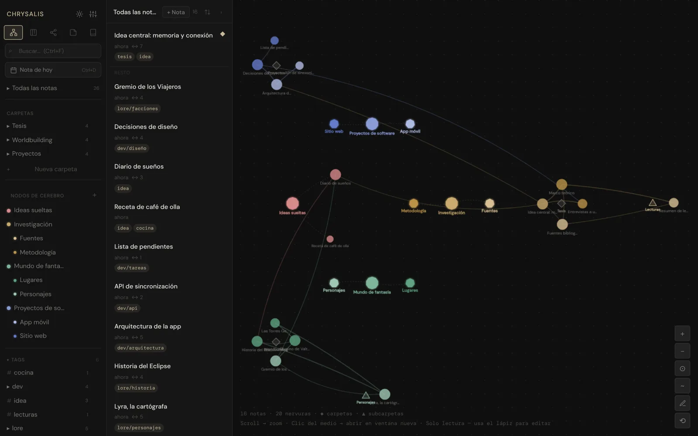

Organiza por nodos y etiquetas. Enlaza con [[Título]] e importa tus documentos .docx.
Un segundo cerebro que vive en tu computador. Notas, grafo, mapas mentales y biblioteca, todo enlazado.

Organiza por nodos y etiquetas. Enlaza con [[Título]] e importa tus documentos .docx.
Mira cómo se relacionan tus ideas y salta de una nota a otra.
Mapas mentales y lienzo libre. Exporta a PDF cuando lo necesites.
Tus PDF con portada y un lector de manga integrado.
Tus notas se guardan en tu equipo. Sin cuenta, sin suscripción. Chrysalis te avisa cuando hay una versión nueva.